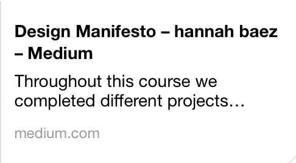

Human Computer Interaction
Final Project
DESIGN MANIFESTO
Throughout this course we completed different projects focusing on the different ways a user can interact with a computer. The five projects we completed were a Design for others, a Design for understanding, a Design for Tension, a Design for Wellbeing, and a Design for Another World. All five of these projects utilized different platforms of user interaction. These allowed us to express both what we were learning in class and our own personal style on HCI in many new ways. During these projects we learned the different methods of user testing and prototyping. These were then implemented in our projects and since then I have been able to reflect on what worked and what didn’t in each of those projects.
The design process helped a lot when narrowing down what we needed to do for each project in order to fulfill our own set requirements for each project. That could be making the user feel a certain way, or helping them learn something. The design process helped us to then correct our project when we did user testing. It helped us to make a list of what needed to be fixed, and what was just a comment form a user. One thing I learned from the reading was that the user isn’t always right and that you shouldn't change your whole project based on the feeling of one user, but if enough of them say the same thing, then it is worth changing. I definitely found the user testing to be the most valuable piece of the design process. It helped me to see my project and work in a different light and reflect on how it could evolve. Some limitations I found in the design process were mostly linked to the initial brainstorming phase. There were different methods that we tried out during the term and I didn’t find most of them very helpful. The one that I liked the most though was from the first project where we used paper representations of what we might want our user interface to look like. This was great because it solely focused on how user friendly the interface was, not how it looked or what color it was, but just if it made sense to the user.
When it came to the different platforms we used for each of the projects, I felt technologically constrained by p5.js for the design for understanding and code.io in the design for wellbeing projects. I really enjoyed trying to figure out how to use the platforms in order to complete these projects, but I found them difficult to use. I really liked using code.io but I also wish that I had had the opportunity to learn more about how to use it. The same goes for p5.js, they don’t seem necessarily difficult to use, but getting started is a little hard. Although some of the software and programs that we needed to learn how to use were challenging, I greatly enjoyed learning about them. Every time I learn about a new one, even if I don’t master it, I feel like I am just adding a new and awesome ability.
Our expectations of our projects did not always meet the reality of what we were able to create. For example, in the last project, the design for another world, we wanted to create a full on world meditation forest. Unfortunately, it proved more difficult than we thought. I made a lot of trees and made them different heights and shades of green, I then started spreading them out but I realized that the coordinate system on the plane in A-Frame, made no sense. This made it very difficult to create the forest we envisioned. It was also difficult because when I tried to add even more trees to our forest the system would just freeze. This in a way applies to the rest of them. I think that the only project where I felt full control was the first project. This is because I had used Adobe XD before, and this made making the mobile website easy. The rest of the projects posed a challenge because I had not used the softwares or programs before and even if they weren’t difficult to use, there was still a slight learning curve that took some time.
Of these five projects, there are five main points that defined my design process throughout the term. These points are color, the organization of material, the implementation of a calm user experience, the implementation of user feedback, and the addition of a “human” feel.
Color and how to use it is one of the most important learning experiences I got out of completing these projects. I won’t pretend at all to be an expert yet, I am most definitely not. Regardless, I was able to learn a lot of new ways to use color to effect how users feel and interact with the different HCI platforms. The first project focused on designing a mobile website, for this project, we used the Technocopia website. The designated group that our site was supposed to reach was freelancing user interface designers, because of this we decided to try and make a simple and material design focused site. I started playing with different colors and using the Google material design tools to try and come up with a design that would be simple yet eye catching and fun. When we tested the first design, users found the colors too distracting. They didn’t like the way the colors went together and wanted to see something simpler. I then went back and changed the color scheme to something more calm and relaxed. This helped a lot. People felt more attracted to the site and found that finding the information they were looking for was easier. Figure 1 is an example of our first UI design that we used during the first user testing day and Figure 2 is an example of our second UI design that we tested for the second user testing day.
Figure 1.

Figure 2.

I also was able to use color to influence a viewer on the next project. For this second project, we designed different kinds of graphs. On my team, my job was to help create graphs that would be persuasive in some way. Using data provided, we designed an interactive graph that would display the volume of different music genres over time. This was lots of fun and we tried using different colors to show change in time or in genere, but die to lack of technical knowledge of p5.js, we were unable to do all the color coding I would have wished we could do. An example of our interactive graph can be seen in Figure 3.
Figure 3.

For our design for wellbeing project was my next opportunity to use color to affect the user. For this, we kept it simple with a creme background color and allowed the colored and vibrant images from the 16Personalities website to speak for themselves. These are two examples where i was able to use color to effect the experience of my user and one example where I wasn’t able to implement it the way I had wished. An example of the different vibrantly colored personality type can be seen in figure 4 and a larger example of the Analyst personality type can be seen in Figure 5.
Figure 4.

Figure 5.

The organization of the material and creating a calm interaction were also very important for every project I did. This is visible in most of the projects. For example, in the design for tension, our chat bot project was about convincing the user of taking the side of those who strongly believe in the 2nd amendment. We approached this initially by gathering as many facts as we could and slowly feeding them to the user along with calm and non aggressive smalltalk. Using this method of organizing our material into a way where we could present it in a calm and unobtrusive manner was very successful in practice. Organizing the material properly provides a clear path of logic and understanding for the user to follow. If you then accompany that with cool colors and calm word choice, then your user feels more in control and they are more likely to listen to what you have to say.
Another thing that I found very useful is to take the user testing very seriously. I don’t mean that seriously as in being a stickler about procedure, but more about making sure to take good notes on how the user felt during the experience. I always received great feedback from everyone who tried our prototypes. This process would always make me realize things that I hadn’t thought of before. An example of this is during the design for tension chat bot, one user said that they really enjoyed how the flow felt like they were following a story that progressed well through different thoughts and ideas. The user then talked about how this made her feel more comfortable and likely to listen to what the bot had to say, regardless of the controversial topic.
The addition of “human” feel is something that I felt I was able to add to most of the projects that I worked on. What I mean by “human” is the feeling that you aren’t just interacting with a computer, but with another entity that is non threatening and calm. For example, in the design for tension chatbot, we used emojis. Based on feedback we received from the user testing, most people felt like the emojis made the bot seem less foreign. We were also able to add some calm and easy smalltalk, this also seemed to have a relaxing effect on users. Another example of this is in the meditation forest. Here, I made a lot of different types of trees and put them in un coordinate places. I designed them this way because I personally felt like most things in nature are imperfect and if the user sees an imperfect landscape, it might feel more real and less strange. I was luckily correct when we tested our prototype, the users felt at ease and enjoyed walking around. An example of the VR forest can be seen in Figure 6. Here, the stream, landscape, and different colored trees are visible.
Figure 6.

These five main ideas really drive all the work I completed this term. I was able to do better on some than others, but I was at least able to leave a little bit of my touch on all of them.
This term affected my design philosophy a lot. Before this class, I had a vision of what I wanted something to look like and what I wanted it to do, but I was unsure what platforms to use and exactly how to do it properly. Now I can use all these new platforms to expand my abilities in robotics and build robots and computer programs that can interact with users in a plethora of ways. I learned a lot about how to limit what I want in a design. Sometimes I wanted to add too much, and this would result in a product that was unsatisfactory to pretty much everyone but me. Now, I have a better understanding of what people”like” and how they feel about what they see.
Medium Post
